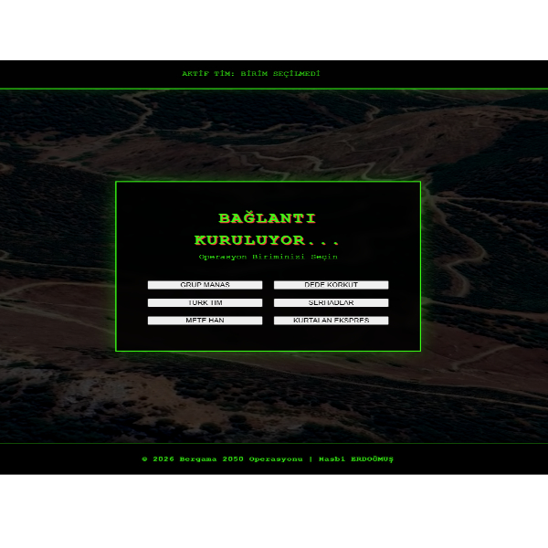
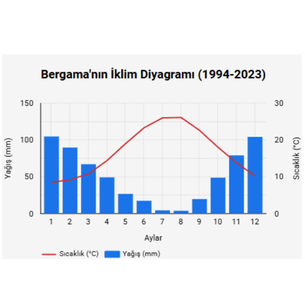
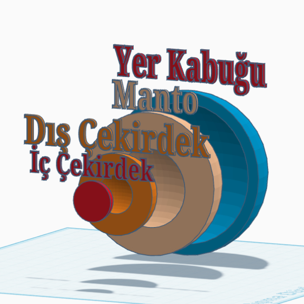
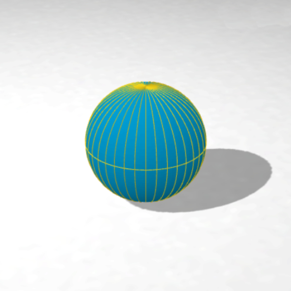
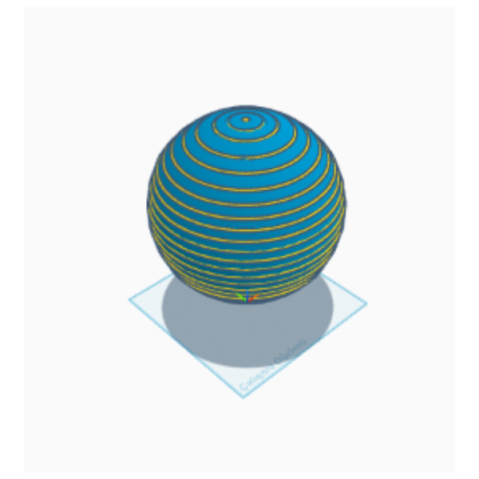

Tasarım, Kodlama ve Coğrafya
Bu alanda yer alan içerikler, teknolojinin sınıf ortamına sadece bir araç olarak değil, bir "deney ve üretim ekosistemi" olarak entegre edildiği Yenilikçi Sınıf modeline dayanmaktadır. Öğrencilerimiz, coğrafya kavramlarını dijital araçlarla modelleyerek soyut bilgiyi somut verilere ve fiziksel ürünlere dönüştürürler.
Soyut coğrafi kavramların 3D modellere dönüşümü.
Coğrafyanın matematiksel omurgasını kod satırlarına dökerek; kavramlara sadece sözel değil, algoritmik bir pencereden bakıyor ve analitik düşünme becerisi kazandırıyoruz.
Bu projelerin tamamı, Millî Eğitim Bakanlığı Yenilik ve Eğitim Teknolojileri (YEĞİTEK) Genel Müdürlüğü tarafından yürütülen "Teknoloji Odaklı Öğrenme Senaryoları Öğretmen El Kitabı" ve Türkiye Yüzyılı Maarif Modeli'nde vurgulanan şu ana eksenler üzerine kuruludur:
Dijital araçlarla üretilen somut ders materyalleri





Coğrafi bilgiyi işleme becerisini, modern iş dünyasının kullandığı Looker Studio ile sınıfa taşıyoruz.
Dünyanın iç yapısını sadece kitaptan okumak yerine, öğrencilerimiz bu yapıyı katman katman bizzat inşa ediyor.
Coğrafyanın matematiksel omurgasını blok tabanlı kodlama ile keşfediyoruz.